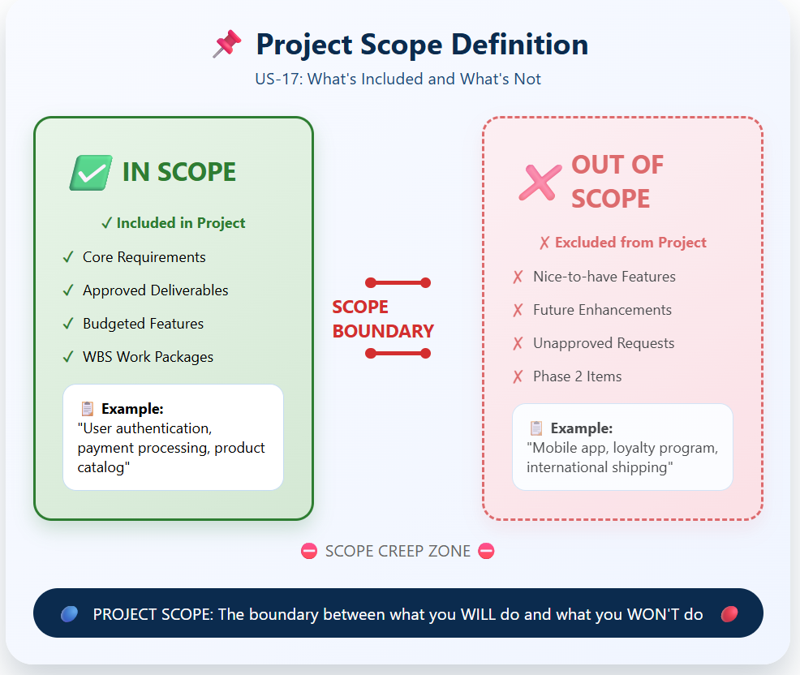

Define the boundaries of your project — know exactly what's included and what's not.
Without a clear definition of scope, projects drift into chaos. As a project manager or Scrum Master, understanding scope helps you set boundaries, manage expectations, and deliver exactly what was promised — nothing more, nothing less.
Project scope is the sum of all the work, deliverables, and features that must be completed to achieve the project's objectives. It defines the boundaries of the project — what is included and, equally important, what is excluded.
Think of scope as the project's "contract" with stakeholders: it establishes what the project will deliver, the features it will include, and the work required to complete it successfully.
The scope boundary separates what you WILL do from what you WON'T do

The features, functions, and characteristics of the product, service, or result you're building.
The work required to deliver the product with its specified features and functions.
| Included in Scope | Excluded from Scope (Out of Scope) |
|---|---|
| Core requirements from stakeholders | Features requested after scope freeze |
| Approved deliverables and milestones | "Nice-to-have" enhancements |
| Agreed-upon functionality | Future phases or versions |
| Work packages from WBS | Unbudgeted resources or time |
When scope is defined, you can identify and reject unauthorized additions.
Everyone agrees on what will (and won't) be delivered.
You can't estimate time and cost without knowing scope.
Clients and teams know exactly what success looks like.
Scope is fixed from the beginning. The entire project is planned upfront, and changes are difficult and expensive.
Scope is flexible within fixed time and budget. The team prioritizes the most valuable features first.
In Scope: Product catalog, shopping cart, checkout with credit card, user accounts, order history
Out of Scope: Mobile app, loyalty program, gift wrapping, international shipping, reviews & ratings
By clearly stating what's IN and OUT, the team avoids arguments later when stakeholders ask for "just one small feature."